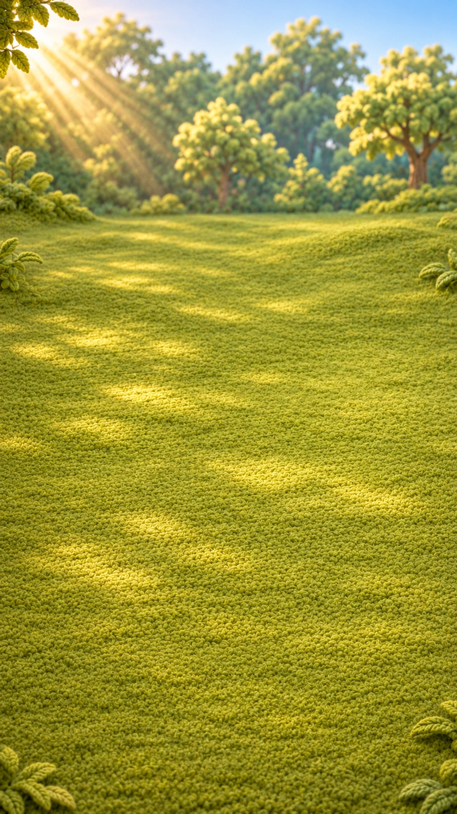

TECHNICAL PREVIEW — ART NOT APPROVED
Цветочная полянка
Первые цветы
Нажимайте «Вязать» — появится первая часть.
Не удалось загрузить материал. Обновите страницу.

Нажимайте «Вязать» — появится первая часть.
Не удалось загрузить материал. Обновите страницу.